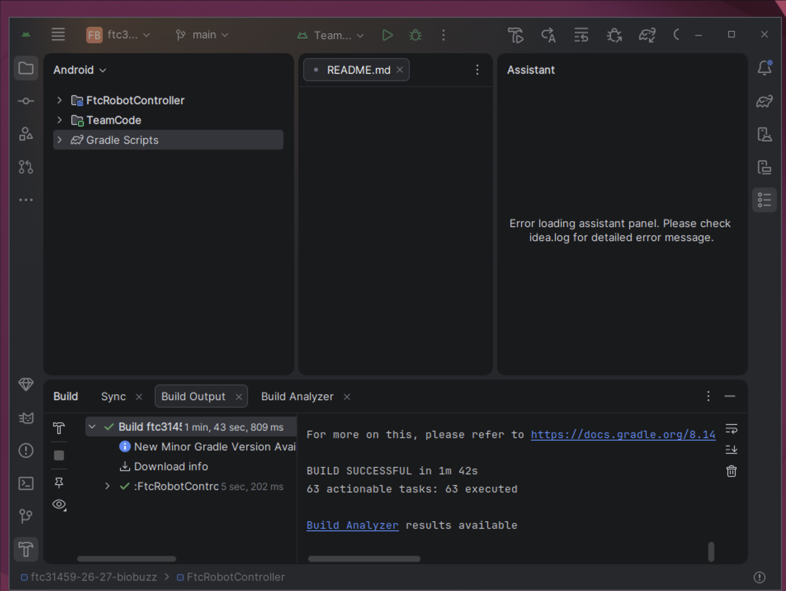
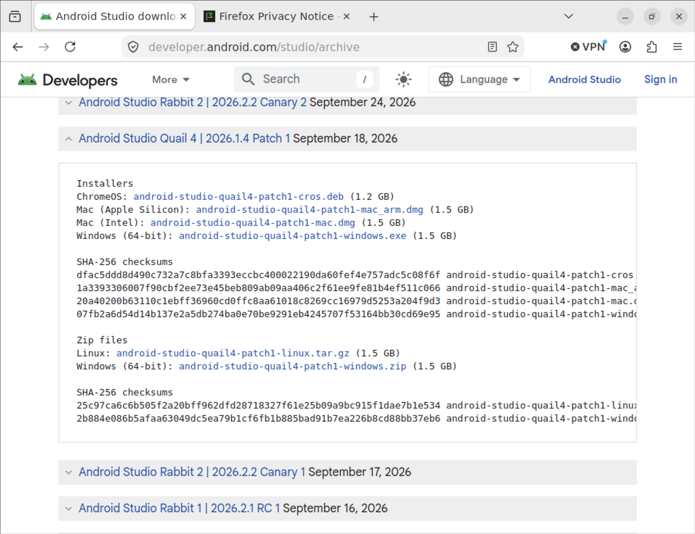
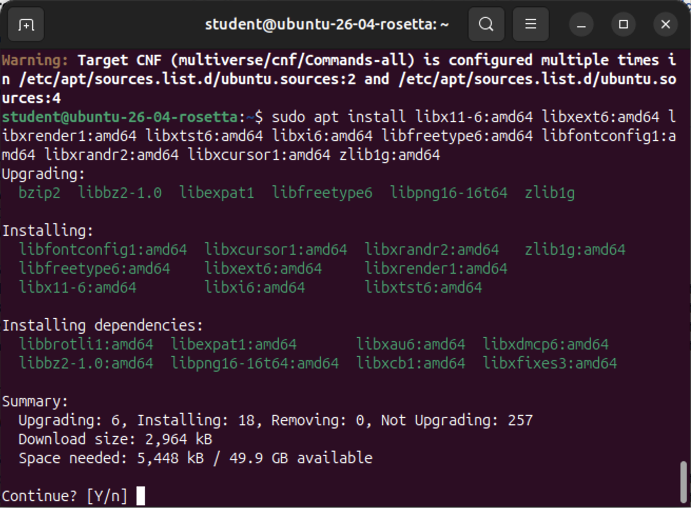
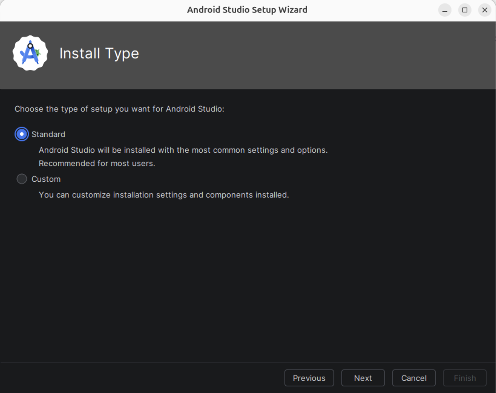
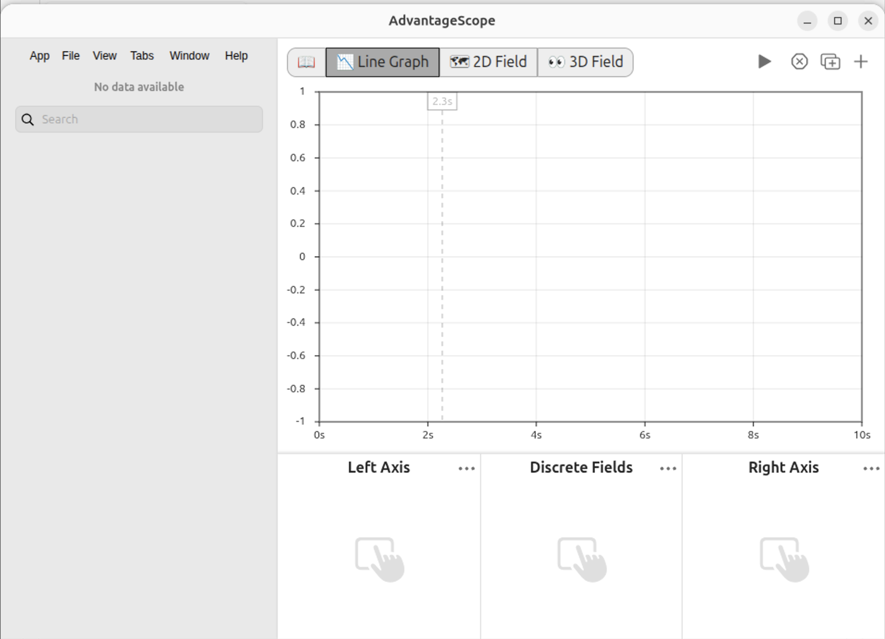
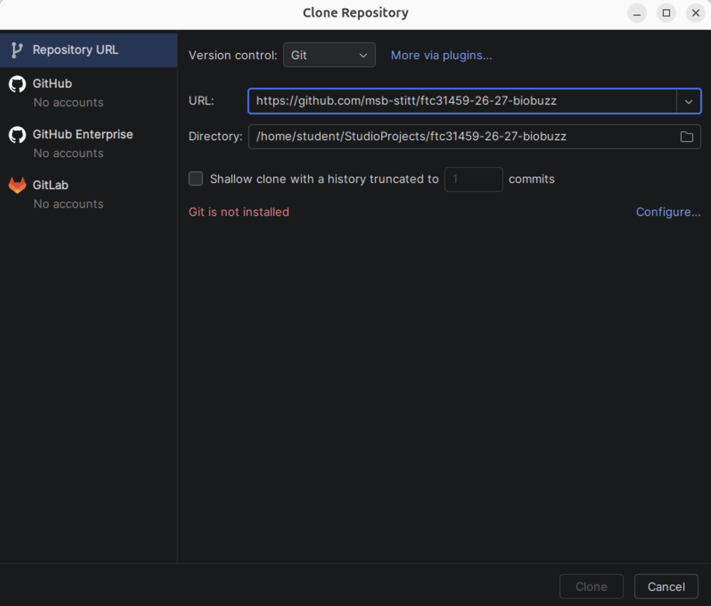
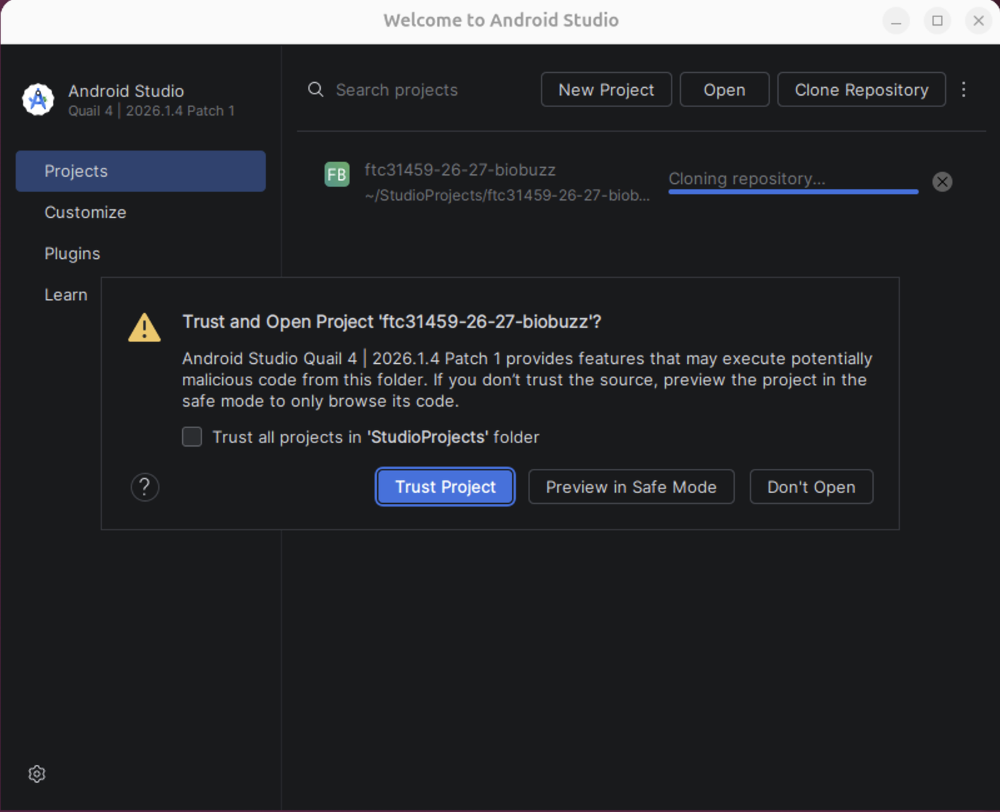
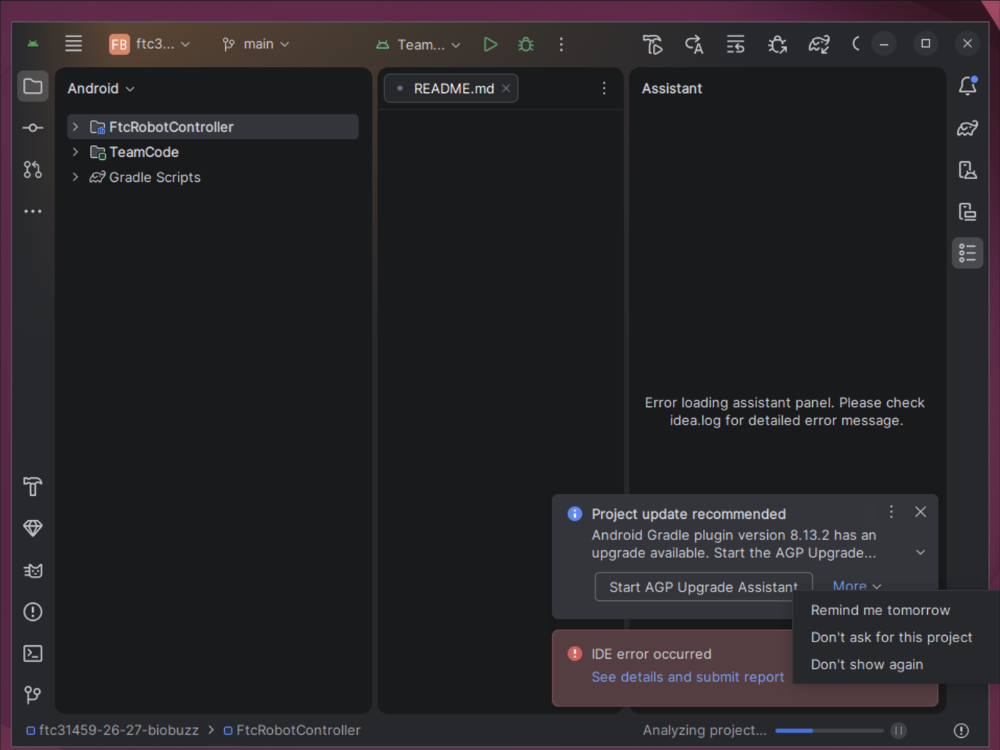
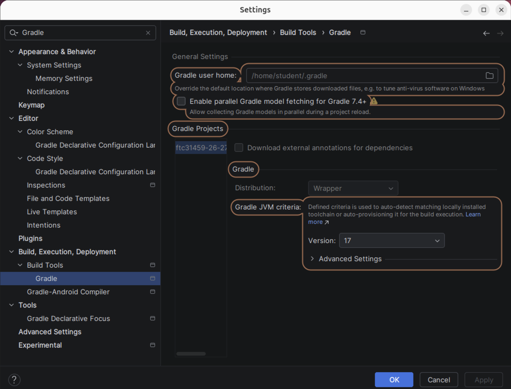
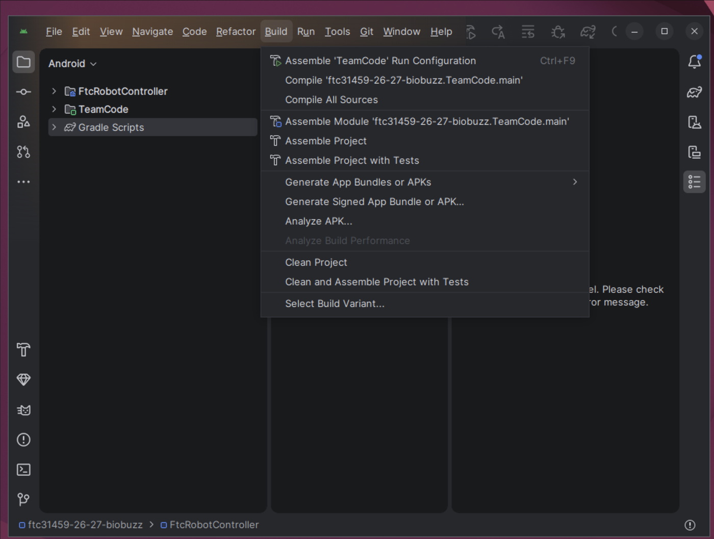

L013: getting started on Ubuntu¶

Android Studio on Ubuntu with the project open and the Build window reading BUILD SUCCESSFUL and 63 actionable tasks: 63 executed.¶
Put the robot’s code on an Ubuntu laptop and build it. After this, every lesson starts in Android Studio with the project open.
Before you start.
An Ubuntu laptop, signed in to an account that may use
sudo.The internet.
No robot and no gamepad are needed.
Nothing else has to be installed first. Android Studio fetches Java 17 for the project by itself, and git is installed in L013S040.
The steps¶
L013S010: install Android Studio¶
The robot’s code is written in Android Studio. The team uses one version of it, Quail 4, so everyone sees the same screens. It is not the newest, so it comes from the page of older versions.
Download.
Open https://developer.android.com/studio/archive and click I agree under the terms.
Click Android Studio Quail 4 | 2026.1.4 Patch 1 to open it.
Click
android-studio-quail4-patch1-linux.tar.gz. It is about 1.5 GB.

The archive page in Firefox with Android Studio Quail 4 | 2026.1.4 Patch 1 open, listing its installers and zip files.¶
Install. Open Terminal and type these two lines, then your password when sudo asks:
sudo apt install libx11-6:amd64 libxext6:amd64 libxrender1:amd64 libxtst6:amd64 libxi6:amd64 libfreetype6:amd64 libfontconfig1:amd64 libxrandr2:amd64 libxcursor1:amd64 zlib1g:amd64
sudo tar -xzf ~/Downloads/android-studio-quail4-patch1-linux.tar.gz -C /opt
Then start Android Studio with /opt/android-studio/bin/studio. Leave that Terminal open while
you work.

Terminal on Ubuntu with the sudo apt install line, the list of packages it installs, and Continue? [Y/n].¶
Check.
Android Studio starts and asks to Help improve Android Studio. Click Don’t send.
If it didn’t, and Android Studio closes a few seconds after it starts with Bus error (core dumped) in Terminal, turn off its Gemini plugin and start it again:
mkdir -p ~/.config/Google/AndroidStudio2026.1.4
echo com.google.tools.ij.aiplugin >> ~/.config/Google/AndroidStudio2026.1.4/disabled_plugins.txt
bin/studio.sh stops with No JRE found; start bin/studio instead.
L013S020: let Android Studio fetch what it needs¶
The first time it starts, Android Studio’s setup wizard downloads the Android tools the code is built with.
Setup.
Click Next on Welcome.
Pick Standard and click Next.
Click Next on Verify Settings.
Click each license on the left, pick Accept, and click Next.
A page about KVM and the emulator comes next. Click Next.
Wait while it downloads, then click Finish.

The setup wizard’s Install Type page on Ubuntu with Standard picked.¶
Check.
The last page of the wizard reads Android SDK is up to date.
Welcome to Android Studio opens, with New Project, Open and Clone Repository.
If a note says Rabbit 1 available, leave it. The team stays on Quail 4.
L013S030: install AdvantageScope¶
AdvantageScope draws what the robot is doing: where it is on the field, and graphs of its numbers.
Download. Open https://github.com/Mechanical-Advantage/AdvantageScope/releases/tag/v26.0.2.
Under Assets, click advantagescope-linux-x64-v26.0.2.deb.
Install. In Terminal, type sudo apt install ~/Downloads/advantagescope-linux-x64-v26.0.2.deb.
Then find AdvantageScope in the app grid and start it.
Check.
AdvantageScope opens on its Line Graph tab, with No data available on the left.

AdvantageScope on Ubuntu, on its empty Line Graph, with No data available in the sidebar.¶
If it didn’t, and the first start says Failed to load assets, click Ok, close AdvantageScope and start it again.
L013S040: get the project¶
The robot’s code lives on GitHub. Android Studio copies it to the laptop with a tool called git.
Git.
On Welcome to Android Studio, click Clone Repository. It says Git is not installed. Close the box.
In Terminal, type
sudo apt install git.Close Android Studio, and start it again with
/opt/android-studio/bin/studio.

Clone Repository on Ubuntu with the URL typed and Git is not installed in red.¶
Clone.
On Welcome to Android Studio, click Clone Repository.
Into URL, type
https://github.com/msb-stitt/ftc31459-26-27-biobuzz. Leave Directory as it is.Click Clone.
Trust. When it asks Trust and Open Project, click Trust Project.

Trust and Open Project ‘ftc31459-26-27-biobuzz’? on Ubuntu with Trust Project highlighted.¶
Check.
The project opens, and the Project window lists
FtcRobotControllerandTeamCode.
If it didn’t, and Android Studio closes with Bus error (core dumped) while the project first
loads, start it again, click Open, pick ~/StudioProjects/ftc31459-26-27-biobuzz, and trust
it again.
L013S050: answer what Android Studio offers¶
While the project loads, Android Studio reads it with Gradle, the tool that builds the code. This is called a sync. The first sync downloads Java 17 and more, and takes a few minutes.
Answer. Notes pop up in the bottom right while it works. Answer each one like this:
Agent Mode now available: click Do not show again. The lessons do not use an AI helper.
Project update recommended, Android Gradle plugin version 8.13.2 has an upgrade available: click More, then Don’t ask for this project. The project needs version 8.13.2, so do not upgrade it.

Project update recommended on Ubuntu with its More menu open: Remind me tomorrow, Don’t ask for this project and Don’t show again.¶
Check.
The Build window’s Sync tab has a green tick beside the project.
Open File → Settings. Type
Gradlein its search box and click Gradle under Build Tools. Under Gradle JVM criteria, Version reads17.

Settings at Build, Execution, Deployment › Build Tools › Gradle, with Gradle JVM criteria and Version: 17.¶
L013S060: build the code¶
Build. Click Build → Assemble Project. The first build takes a few minutes.

The Build menu open on Ubuntu, with Assemble Project among its items.¶
Check.
The Build window’s Build Output tab ends with BUILD SUCCESSFUL and 63 actionable tasks: 63 executed.
What you just did. Android Studio is where the code is written, and Gradle turns the code into
an app for the robot. Clone copied the team’s repository from GitHub onto the laptop. The sync read
the project’s Gradle files and downloaded what they ask for: Gradle 8.14.3, the Android Gradle
plugin 8.13.2 and Java 17 among them. Assemble Project built FtcRobotController and TeamCode
into TeamCode-debug.apk, the app that is sent to the robot.
Where next. L020 copies the first starter into mytry and reads the gamepad’s
sticks.